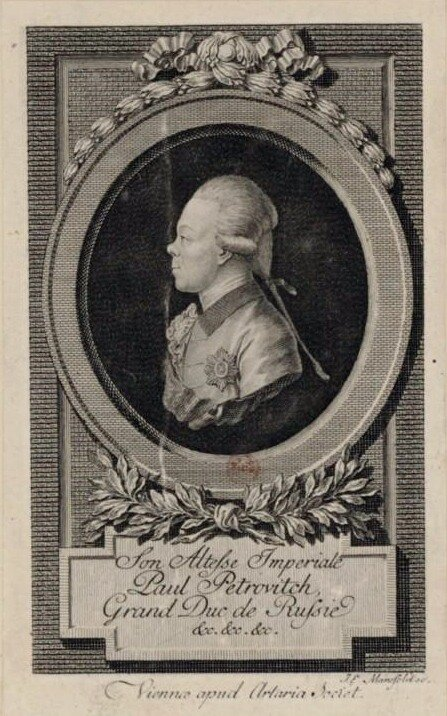

Общим местом является утверждение, что единственное содержание жизни Павла I составлял милитаризм. Идеи внесения порядка в государственную жизнь ассоциировались с заботой о строжайшей дисциплине, охватывающей собою не только армию и флот, но всю общественную и частную жизнь.

Во все времена флот, как правило, меньше других видов вооруженных сил страдает от повышения требований к дисциплине, мелочной регламентации повседневной жизни. Корабли в течение длительного времени находятся вне зоны непосредственного контроля высших штабов и руководства страны. Автономность эта позволяет сохранять старые обычаи и привычки, чем объясняется известная консервативность всех сторон морской жизни. Эта особенность морской службы в какой-то мере позволила избежать многих нововведений в эпоху Павла I. Многих, но не всех.
Были осуществлены те из мероприятий Павла, которые касались формы одежды моряков, их перемещений за пределы гарнизона или порта, введен строгий спрос за подотчетные средства и суммы из казенной кассы, за использование в личных целях труда подчиненных.
Вот что мы читаем по этому поводу в упоминавшихся выше заметках адмирала А.С. Шишкова:
«Наставшая вдруг, после долговременно продолжавшегося, тихого и кроткого царствования, крутая, строгая, необычайная перемена
приводила всех в некоторый род печали и уныния. Все пошло на прусскую стать : мундиры, большие сапоги, длинные перчатки, высокие треугольные шляпы, усы, косы, пукли, ордонанс-гаузы, экзерцир-гаузы, шлагбаумы (имена доселе неизвестные)…»
Уничижительное подражание пруссакам напоминало забытые времена Петра Третьего. «Все сии новости подавали повод к разным пересказам, шепотам и толкам, сопровождаемым огорчительными или насмешливыми улыбками.»
Но никакие предписания не могли коренным образом изменить порядок, привычный на море. Как в «славное для флота время вооруженного нейтралитета» бригадир Палибин, начальник русского отряда у берегов Пиренейского полуострова «появляется на шканцах в шлафроке, туфлях, розовом галстуке и белом ночном колпаке», так и об одном из офицеров начала XIX в. В.И. Даль пишет: «форма стесняла его до некоторой степени на берегу, но в море он управлялся с нею по-своему: я не помню его на вахте иначе, как в куртке с шитым воротником, то есть в мундире с отрезанными полами и в круглой шляпе с низкою тульей». Ему вторят записки П.П. Свиньина: «Первый шаг в кают-компанию нашу должен, полагаю я, поразить удивлением всякого, сколько разнообразием костюмов, не менее контрастами занятий и упражнений» (цит. по Е.М. Лупановой). После такой вольницы указ Павла о новой морской форме был встречен без энтузиазма, хотя он и имел под собой некоторые рациональные основания. Вот что по этому поводу пишет Ф.Ф. Веселаго:
«Государь, преследовавший роскошь и вводящий везде возможную экономию, изменил форму одежды морских чинов на более простую и дешевую. Расшитые золотом кафтаны, или мундиры высших чинов, вовсе отменены, и повелено «быть всем всегда в вице-мундирах». Вместо прежних белых кафтанов, флотским офицерам положено иметь темнозеленые, без лацканов, с темно-зеленым же подбоем, обшлагами и золотыми пуговицами; воротник, штаны и камзол белые. Дивизии различались нашивками на клапане возле обшлага: 1-я дивизия имела нашивки золотые, 2-я — серебряные, 3-я — пополам золотые и серебряные. Члены Адмиралтейств-коллегии и состоявшие по адмиралтейству имели ту жe форму, но только с серебряными пуговицами. Штурмана, шхипера и коммисары, при том же мундире, имели воротник зеленого цвета. Морским артиллеристам полагался кафтан темно-зеленый, с таким же воротником и обшлагами, камзолы и штаны белые. Плащи белые суконные. Адмиралтейским чинам — кафтаны, камзолы и штаны темнозеленые. Морскому кадетскому корпусу определен мундир темнозеленый без галуна, лацканы, штаны и камзолы белые.»
В принципе, не бог весть какие изменения, но на флоте всегда в штыки встречали нововведения в форме. Когда в середине шестидесятых годов прошлого века отменили у морских офицеров золотые погоны на повседневной форме, а взамен их ввели черные с желтым кантом, была на флоте общая обструкция: «Не будем носить ЖАНДАРМСКИЕ погоны!» Нововведение быстро отменили, и хотя золото на погоны не вернули, но желтый кант сняли.
Но при Павле такие штучки не проходили:
«Его И. В. усмотрев что многие из офицеров отпущенных из Кронштадта приходят к разводу совсем почти не чесавшись, а растрепою, почему и соизволил высочайше повелеть подтвердить по всем командам, дабы офицеры имели навсегда голову причесану как должно; а как оные по ныне еще и не обмундированы по данной форме, то о сем пещись, чтобы поскорее были обмундированы все, хотя от казны с вычетом из их жалованья, по прежде бывшему примеру.»
Вспоминаются тут времена маршала Язова, фамилию которого «расшифровывали» так: «Я заставлю офицера вспотеть». Запрещены были рубашки с коротким рукавом, отменена форма без галстука и проведено прочее «закручивание гаек» в военной форме.
В екатерининские времена морские офицеры пользовались относительно широкой свободой передвижения, хотя устав 1720 г. и запрещал несанкционированные отлучки. Поездка из Кронштадта в Санкт-Петербург была делом вполне обычным, не требовавшим специального разрешения вышестоящего начальника. Опоздание из отпуска было также распространенным явлением и, вопреки букве устава, не влекло за собой серьезных последствий. В декабре 1796 г. император издал указ «чтобы флагманы и капитаны равно и офицеры от своих команд не отлучались и не ездили из Кронштадта в Петербург, а из Петербурга в Кронштадт, равно и в другие порты, не испросив на то дозволения». Далее последовала серия указов об отставке не явившихся в срок к своим командам офицеров, завершившаяся распоряжением «всех из увольняемых в отпуск штаб и обер-офицеров… кто учинит просрочку, сажать под арест и содержать столько времени, сколько кто просрочит, выключая при том жалованье не токмо за время отпуска, но и за просрочку и нахождение под арестом».
Но голь на выдумку хитра! И вот в массовом порядке начинают появляться прошения офицеров о продлении отпусков вследствие «приключившейся болезни». Правда и тут император оказался хитрее: он приказал не отпускать с корабля офицеров в отпуск, пока не явятся находящиеся в отлучке. От болезней пришлось быстро излечиваться, дабы не вызывать гнева своих же товарищей.
С воцарением Павла началась яростная кампания против использования офицерами флота труда подчиненных в личных целях. При Екатерине на эти злоупотребления смотрели сквозь пальцы, вспоминали о них только в военное время. В остальное же время подобная практика процветала, не порождая неприятностей для кого бы то ни было. С приходом Павла снисходительное отношение к использованию офицерами труда подчиненных исчезает. За период его царствования было издано не менее пяти указов, запрещавших злоупотребления данного типа. Многие офицеры и адмиралы получили высочайший выговор за нарушение этого требования, но взыскания эти не возымели должного действия. А при Александре I преследования за эти злоупотребления прекратились, и все вернулось на круги своя.
Перечитал свои последние заметки, и остановился: выходит, будто правление Павла – светлое пятно в истории отечественного флота, возрождение славных петровских времен… Именно к такому выводу приходят многие исследователи морской истории последнего времени. Так ли это?
Если посмотреть глубже, и учесть, к каким последствиям привели действия Павла в области военно-морского строительства, то от такого вывода придется воздержаться.
Обоснуем это, а заодно и рассмотрим судьбу флота при преемнике Павла Александре I, в следующий раз.